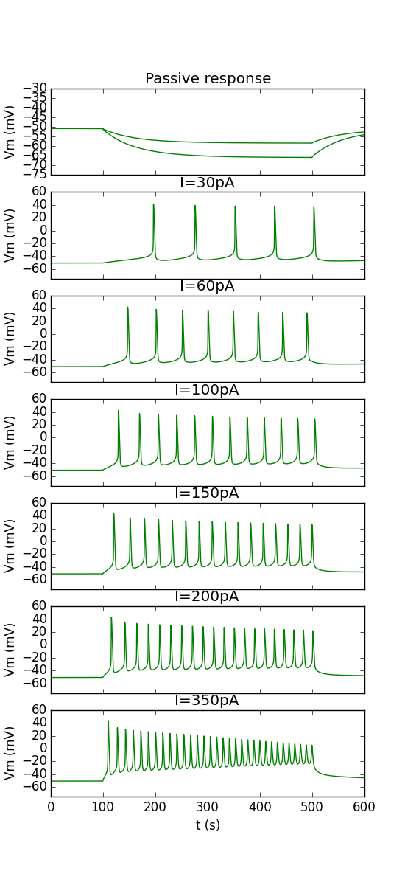
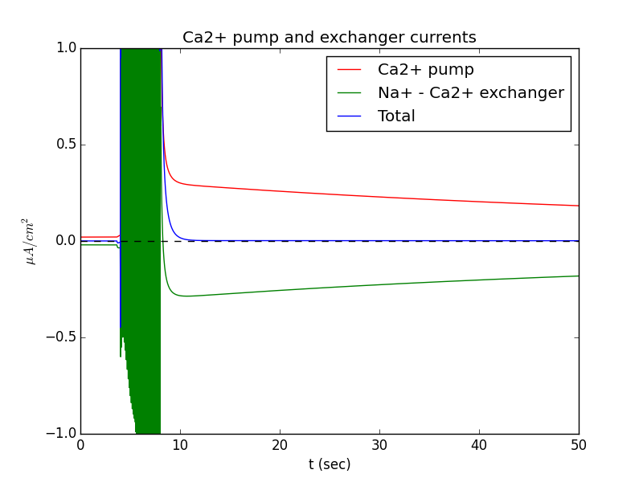
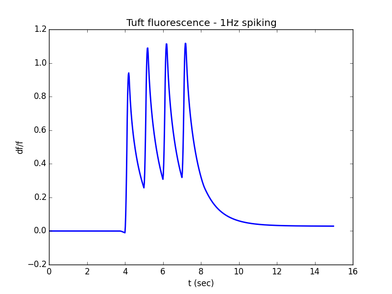
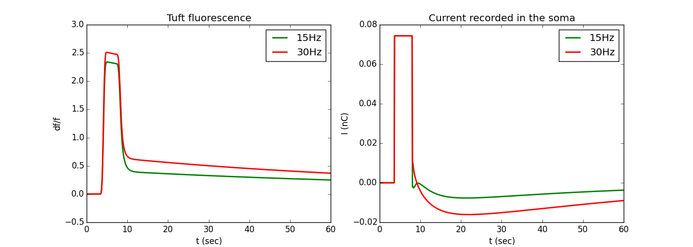

Model files from the paper: Zylbertal et al., "Prolonged Intracellular Na+ Dynamics Govern Electrical Activity in Accessory Olfactory Bulb Mitral Cells", PLOS Biology (2015) The file model_demo.py reproduces plots from figures 4-6 of the article by calling the modules model_definition.py and model_run.py. Questions on how to use this model should be directed to asaph.zylbertal@mail.huji.ac.il Synopsis: Persistent activity has been reported in many brain areas and is hypothesized to mediate working memory and emotional brain states and to rely upon network or biophysical feedback. Here we demonstrate a novel mechanism by which persistent neuronal activity can be generated without feedback, relying instead on the slow removal of Na+ from neurons following bursts of activity. This is a realistic conductance-based model that was constructed using the detailed morphology of a single typical accessory olfactory bulb (AOB) mitral cell for which the electrophysiological properties were characterized. A novel feature of the model is the incorporation of compartmental [Na+]i as state variables along with longitudinal ionic diffusion. Accordingly, [Na+]i not only sets the local Na+ reversal potential, but also affects localized ionic extrusion mechanisms (Na+-K+ pumps, Na+-Ca2+ exchangers). The model assumes that active conductances reside in the apical dendrites and dendritic tufts, as well as in the soma and axon initial segment, so that [Na+]i increase in these compartments following firing. Using this model and follow-up experiments we found that the exceptionally slow inward current that follows bursts of activity in AOB mitral cells is governed by prolonged dynamics of [Na+]i. Specifically, elevated dendritic [Na+]i reverses the Na+-Ca2+ exchanger activity, thus modifies the [Ca2+]i set-point. This process, which relies on ubiquitous membrane mechanisms, is likely to play a role in other neuronal types in various brain regions. Example use: Extract the archive, run nrnivmodl in the channels directory (linux/unix) or mknrndll (mswin or mac os x) (see http://senselab.med.yale.edu/ModelDB/NEURON_DwnldGuide.html for more help) to compile the channels, and run the file model_demo.py. After a while, It will produce the main figures from the paper that are based on the model:    